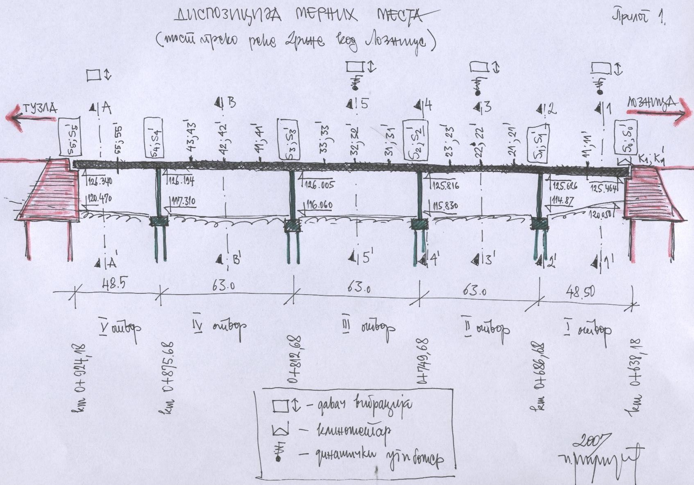
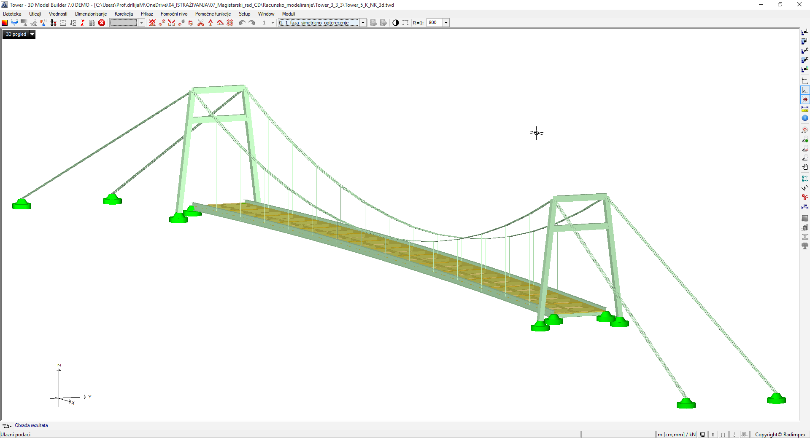
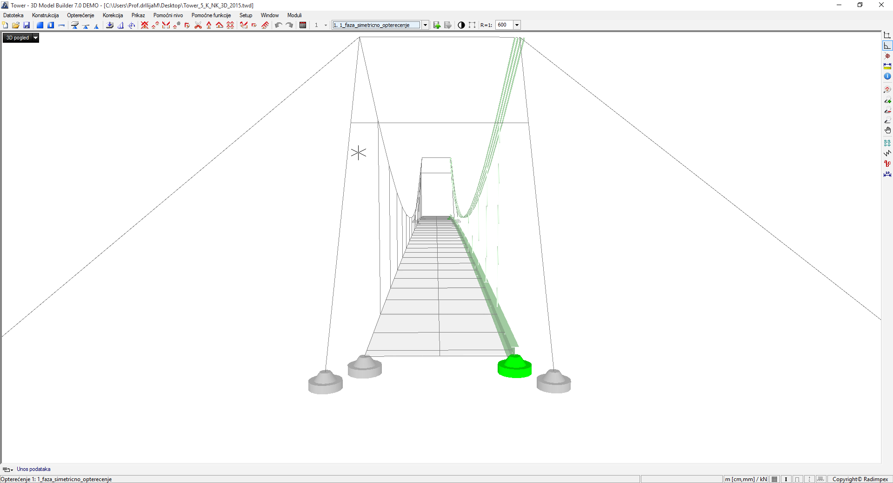
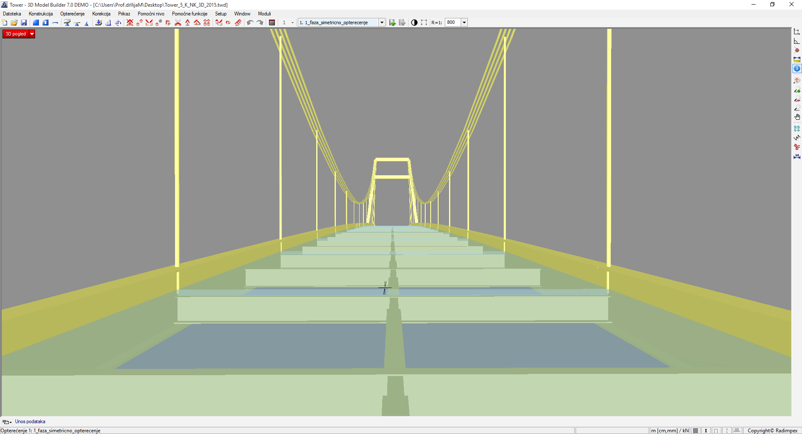
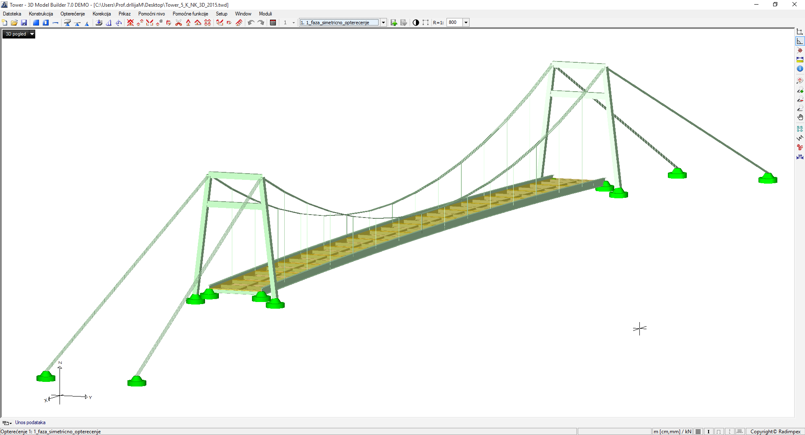
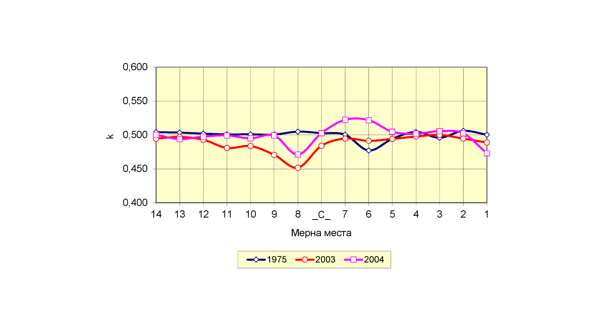
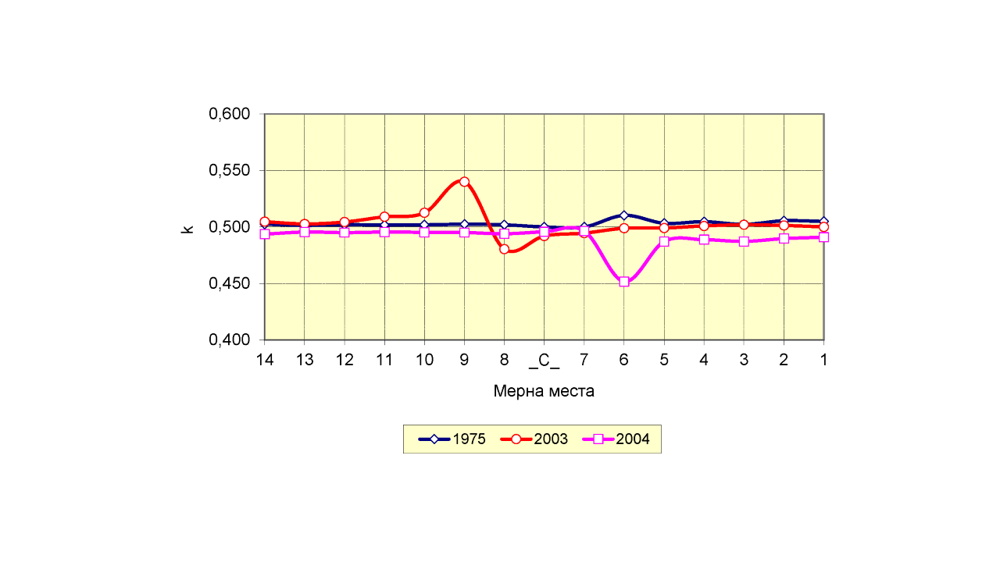
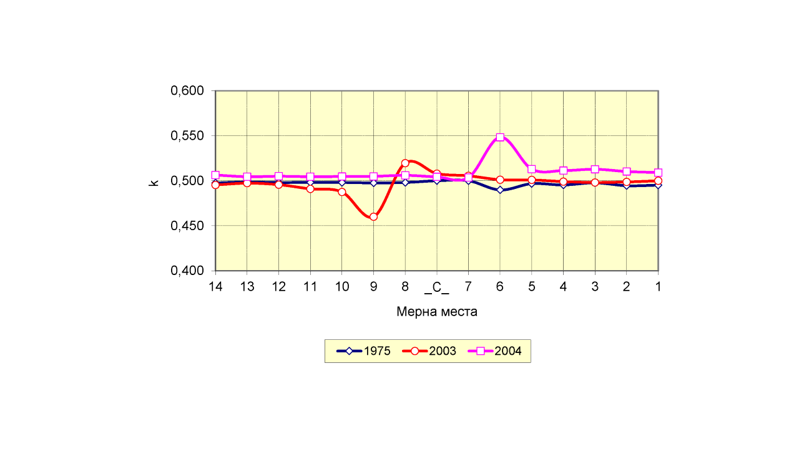
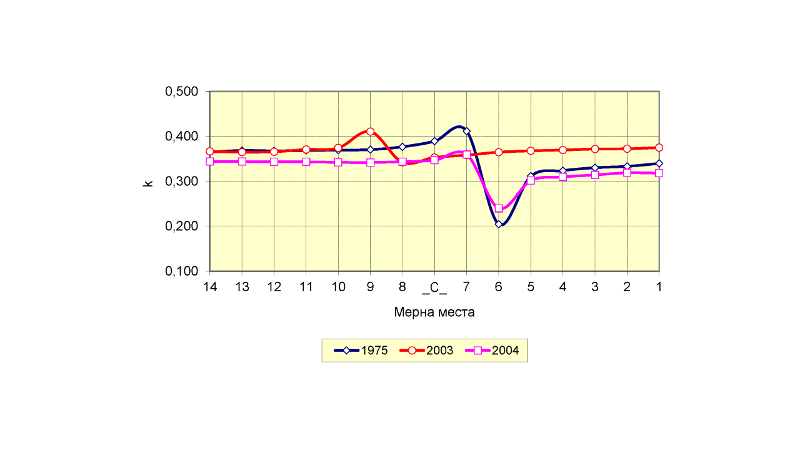

Докторска дисертација
Тема: ТЕОРИЈСКО ЕКСПЕРИМЕНТАЛНА АНАЛИЗА ПРЕРАСПОДЕЛЕ ОПТЕРЕЋЕЊА ПРИ ОДРЕЂИВАЊУ УПОТРЕБЉИВОСТИ МОСТОВСКИХ КОНСТРУКЦИЈА
Објекти теоријско експерименталне анализе су реалне конструкције – мостови, у периоду истраживања су века експлоатације од 47 година најстарији, до 30 година најмлађи, ако се тако може рећи. Реч је о мостовским конструкцијама:
- Мост преко реке Дунав код Панчева,
(испитивање извршено: 17.09.2006.),
- Друмски мост преко реке Саве на путу Шабац – Кленак,
(испитивање извршено: 15 и 16.12.1975.),
- Мост преко реке Дрине код Лознице,
(испитивање извршено: 11 и 12.01.1975.),
- Мост преко реке Тисе на путу Кањижа – Нови Кнежевац,
(испитивање извршено: јула 1975., 03.06.2003. и 25.12.2004.),и
- Модел моста у размери 1:3 – лабораторијско истраживање реализовано одбрањеном докторском дисертацијом проф. др Петра Чолића (1987.), са архитектонско – грађевинског факултета у Приштини.

ИММ: Диспозиција мерних места - подужни пресек моста
ИММ: Фотодокумeнтација |2003|.
Рачунарско моделирање и симулација статичког пробно оптерећења - симетрично и несиметрично дејство у попречном правцу моста
- 
3Д модел моста - узводна страна. (Tower 7.0)
 Моделирање 2Д модела носача моста - узводна страна. (Tower 7.0)
Моделирање 2Д модела носача моста - узводна страна. (Tower 7.0)- 
Моделирање 2Д модела носача моста - низводна страна. (Tower 7.0)
- 
3Д модел моста - поглед на попречне носаче. (Tower 7.0)
 3Д прорачунски модел моста - узводна страна. (Tower 7.0)
3Д прорачунски модел моста - узводна страна. (Tower 7.0) 3Д модел моста - подужни изглед. (Tower 7.0)
3Д модел моста - подужни изглед. (Tower 7.0)- 
3Д модел моста - низводна страна. (Tower 7.0)
Коефицијент попречне прерасподеле статичког пробног оптерећења на основу мерених угиба
- 
Симетрично постављено пробно оптерећење - низводна страна.(експериментално утврђен "k")
- 
Симетрично постављено пробно оптерећење - низводна страна.(рачунски утврђен "k")
 Симетрично постављено пробно оптерећење - узводна страна.(експериментално утврђен "k")
Симетрично постављено пробно оптерећење - узводна страна.(експериментално утврђен "k")- 
Симетрично постављено пробно оптерећење - узводна страна.(рачунски утврђен "k")
 Несиметрично постављено пробно оптерећење - низводна страна.(експериментално утврђен "k")
Несиметрично постављено пробно оптерећење - низводна страна.(експериментално утврђен "k")- 
Несиметрично постављено пробно оптерећење - низводна страна.(рачунски утврђен "k")
 Несиметрично постављено пробно оптерећење - узводна страна.(експериментално утврђен "k")
Несиметрично постављено пробно оптерећење - узводна страна.(експериментално утврђен "k") Несиметрично постављено пробно оптерећење - узводна страна.(рачунски утврђен "k")
Несиметрично постављено пробно оптерећење - узводна страна.(рачунски утврђен "k")
Резиме: У истраживању који је пре-дмет овог рада, теоријским присту-пом – рачунарским моделирањем и симулацијама у корелацији са екс-перименталним поступцима трети-ра се попречна прерасподела ста-тичког оптерећења.
Попречна прерасподела оптереће-ња се утврђује на основу мерења општих деформација – угиба и про-мена нагиба тангенти на деформа-циону линију према анализи крите-ријума употребљивости, на посеб-но одабраним мостовским констру-кцијама.
У раду се на систематичан начин посебна пажња поклања класифи-кацији попречне прерасподеле оптерећења као битног фактора са гледишта и могућности коришћења већине данас присутних рачунар-ских апликација за САА, (конкретно Tower и SAP 2000n). Због тога је успостављена оцена прорачунског модела на основу степена поуз-даности описа стварног стања понашања мостовских конструк-ција.
Прегледом домаће и стране регу-лативе уочена је иновација у категоризацији мостовских конст-рукција са урбанистичког гледишта с обзиром на третирани критеријум у овом истраживању.
У раду је дат оригиналан предлог класификације обрађен на приме-рима испитиваних мостовских кон-струкција са гледишта методоло-гије рачунарског моделирања и симулација. Геометријско–механич-ком аналогијом обезбеђено је јед-ноставније и коректније рачунско моделирање носача спрегнутих попречног пресека "челик–бетон" са геометријски идентичним кон-цептом моделирања за потребе верификације угиба. Геометријско–механичком аналогијом се пока-зало да је крутост спрегнутог поп-речног пресека "челик–бетон" про-менљива дуж носача, а дата је у функцији припадајуће и садејст-вујуће ширине бетонске плоче, као и односа механичких карактерис-тика два материјала.
Коефицијент попречне прераспо-деле статичког оптерећења као па-раметар модела у функцији мере-них угиба је стохастичког карак-тера, јер зависи од низа параме-тара чији је утицај у различитим околностима другачији. Међутим, за решавање конкретних свакод-невних задатака обично се усваја као константна величина.
Као мера од посебног значаја пред-лаже се да се за критеријум упот-ребљивости са гледишта општих деформација усвоји L/800–регула-рно стање понашања конструкције, чиме се обезбеђује потребан ниво у погледу погодности у одржавању мостовских конструкција.
Кључне речи:
анализа, мостови, модели и моделирање, прорачун-ски модел, интеракција програма CAD–CAA, програмско окружење за CAA, симулација, мерење, прерас-подела оптерећења, употребљи-вост конструкција, стабилност кон-струкција.